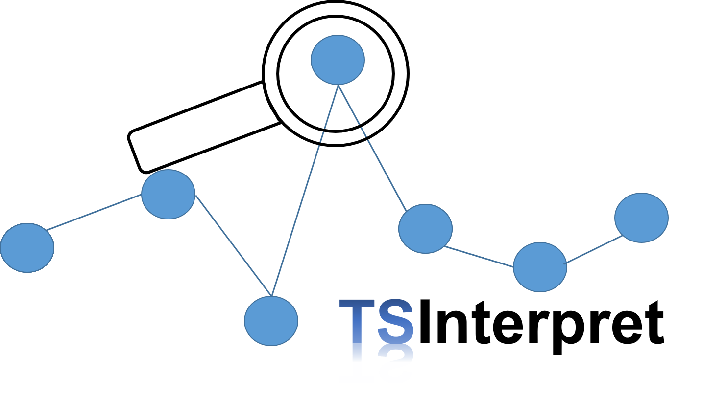
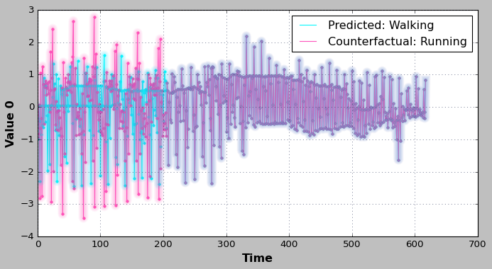
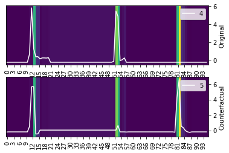
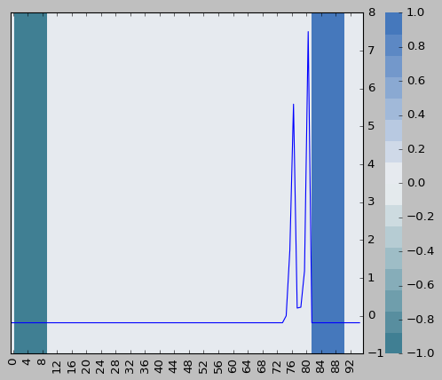
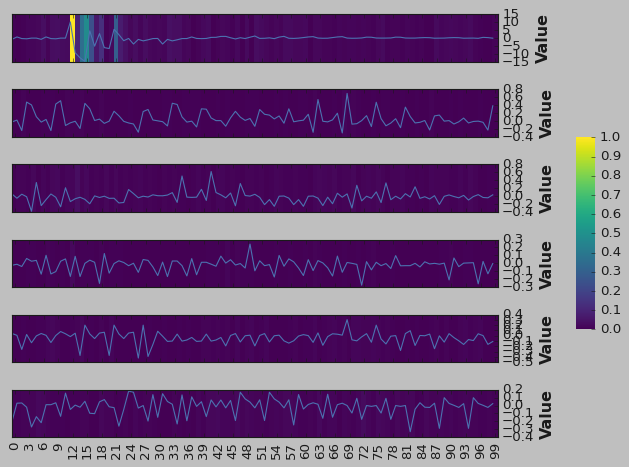
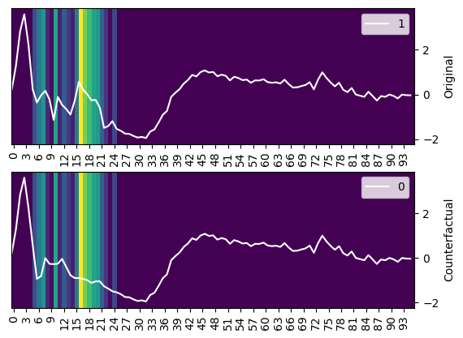
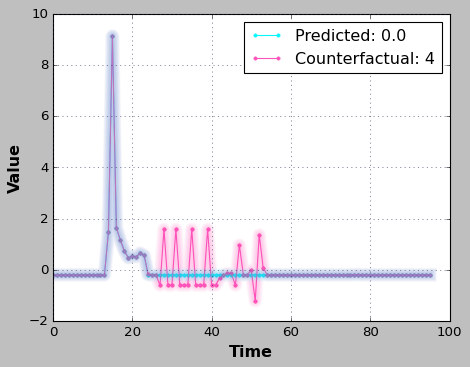

Welcome to TSInterpret
TSInterpret is a Python library for interpreting time series classification. The ambition is to facilitate the usage of time series interpretability methods. Thereby TSInterpret implements various interpretability algorithms specifically for time series classification on various frameworks (PYT, tf, sklearn). Furthermore, it provides unified visualizations of the results of the implemented algorithms. Wherever possible, TSInterpret is built on existing interpretability libraries like shap, captum and tf-explain.
| Counterfactual Ates et al. [^1] | NUN-CF [^2] | ||
|  |  | ||
| LEFTIST [^3] | TSR [^4] | ||
|  |  | ||
| SETS [^5] | TSEvo [^6] | ||
|  |  |
Why a special package for the interpretability of time series predictors?
Compared to other data types like tabular, image, or natural language data, time series data is unintuitive to understand. Approaches to the explainability of tabular regression and classification often assume independent features. Compared to images or textual data, humans cannot intuitively and instinctively understand the underlying information contained in time series data. Further, research has shown that applying explainability algorithms for tabular, image, or natural language data often yields non-understandable and inaccurate explanations, as they do not consider the time component (e.g., highlighting many unconnected time-steps, instead of features or time slices4). Increasing research has focused on developing and adapting approaches to time series (survey7). However, with no unified interface, accessibility to those methods is still an issue. TSInterpret tries to facilitate this by providing a PyPI package with a unified interface for multiple algorithms, documentation, and learning resources (notebooks) on the application.
-
Emre Ates, Burak Aksar, Vitus J. Leung, and Ayse K. Coskun. Counterfactual Explanations for Machine Learning on Multivariate Time Series Data. 2021 International Conference on Applied Artificial Intelligence (ICAPAI), pages 1–8, May 2021. arXiv: 2008.10781. URL: http://arxiv.org/abs/2008.10781 (visited on 2022-03-25), doi:10.1109/ICAPAI49758.2021.9462056. ↩
-
Eoin Delaney, Derek Greene, and Mark T. Keane. Instance-Based Counterfactual Explanations for Time Series Classification. In Antonio A. Sánchez-Ruiz and Michael W. Floyd, editors, Case-Based Reasoning Research and Development, volume 12877, pages 32–47. Springer International Publishing, Cham, 2021. ↩
-
Mael Guilleme, Veronique Masson, Laurence Roze, and Alexandre Termier. Agnostic Local Explanation for Time Series Classification. In 2019 IEEE 31st International Conference on Tools with Artificial Intelligence (ICTAI), 432–439. Portland, OR, USA, November 2019. IEEE. ↩
-
Aya Abdelsalam Ismail, Mohamed Gunady, Héctor Corrada Bravo, and Soheil Feizi. Benchmarking Deep Learning Interpretability in Time Series Predictions. arXiv:2010.13924 [cs, stat], October 2020. arXiv: 2010.13924. ↩
-
Omar Bahri, Soukaina Filali Boubrahimi, and Shah Muhammad Hamdi. Shapelet-based counterfactual explanations for multivariate time series. arXiv preprint arXiv:2208.10462, 2022. ↩
-
Jacqueline Höllig, Cedric Kulbach, and Steffen Thoma. Tsevo: evolutionary counterfactual explanations for time series classification. In 2022 21st IEEE International Conference on Machine Learning and Applications (ICMLA), 29–36. IEEE, 2022. ↩
-
Thomas Rojat, Raphaël Puget, David Filliat, Javier Del Ser, Rodolphe Gelin, and Natalia Díaz-Rodríguez. Explainable artificial intelligence (xai) on timeseries data: a survey. arXiv preprint arXiv:2104.00950, 2021. ↩